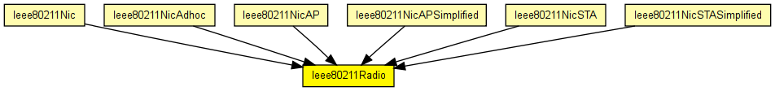
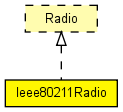

Physical layer for the IEEE 802.11 models. Its external interface (including gates and how it communicates with other modules) is the same as the Radio module's.
The implementation is largely based on the Mobility Framework's SnrEval80211 and Decider80211 modules.
See also: Radio
Author: Andras Varga
The following diagram shows usage relationships between types. Unresolved types are missing from the diagram. Click here to see the full picture.
The following diagram shows inheritance relationships for this type. Unresolved types are missing from the diagram. Click here to see the full picture.
If a module type shows up more than once, that means it has been defined in more than one NED file.
| Ieee80211Nic (compound module) |
This NIC implements an 802.11 network interface card. It can be configured via the mgmtType parameter to act as an AP or a STA, or for ad-hoc mode. |
| Ieee80211NicAdhoc (compound module) |
This NIC implements an 802.11 network interface card in ad-hoc mode. |
| Ieee80211NicAP (compound module) |
This NIC implements an 802.11 network interface card, in an AP, using infrastructure mode. |
| Ieee80211NicAPSimplified (compound module) |
This NIC implements an infrastructure mode 802.11 network interface card for a wireless Access Point (AP), but using a simplified mgmt module that does not support handovers. |
| Ieee80211NicSTA (compound module) |
This NIC implements an 802.11 network interface card, in a STA, using infrastructure mode. |
| Ieee80211NicSTASimplified (compound module) |
This NIC implements an infrastructure mode 802.11 network interface card for a host (STA), but using a simplified mgmt module that does not support handovers. |
| Name | Type | Default value | Description |
|---|---|---|---|
| channelNumber | int | 0 |
channel identifier |
| transmitterPower | double | 20mW |
power used for transmission of messages (in mW) |
| bitrate | double |
(in bits/s) |
|
| thermalNoise | double | -110dBm |
base noise level (dBm) |
| pathLossAlpha | double | 2 |
used by the path loss calculation |
| snirThreshold | double | 4dB |
if signal-noise ratio is below this threshold, frame is considered noise (in dB) |
| sensitivity | double |
received signals with power below sensitivity are ignored |
| Name | Value | Description |
|---|---|---|
| display | i=block/wrxtx |
| Name | Direction | Size | Description |
|---|---|---|---|
| uppergateIn | input |
from higher layer protocol (MAC) |
|
| uppergateOut | output |
to decider (decider connects to higher layer protocol, i.e. the MAC) |
|
| radioIn | input |
to receive frames (AirFrame) on the radio channel |
// // Physical layer for the IEEE 802.11 models. Its external interface // (including gates and how it communicates with other modules) // is the same as the Radio module's. // // The implementation is largely based on the Mobility Framework's // SnrEval80211 and Decider80211 modules. // // @see Radio // @author Andras Varga // simple Ieee80211Radio like Radio { parameters: int channelNumber = default(0); // channel identifier double transmitterPower @unit("mW") = default(20mW); // power used for transmission of messages (in mW) double bitrate @unit("bps"); // (in bits/s) double thermalNoise @unit("dBm") = default(-110dBm); // base noise level (dBm) double pathLossAlpha = default(2); // used by the path loss calculation double snirThreshold @unit("dB") = default(4dB); // if signal-noise ratio is below this threshold, frame is considered noise (in dB) double sensitivity @unit("mW"); // received signals with power below sensitivity are ignored @display("i=block/wrxtx"); gates: input uppergateIn @labels(PhyControlInfo/down,Ieee80211Frame); // from higher layer protocol (MAC) output uppergateOut @labels(PhyControlInfo/up,Ieee80211Frame); // to decider (decider connects to higher layer protocol, i.e. the MAC) input radioIn @labels(AirFrame); // to receive frames (AirFrame) on the radio channel }